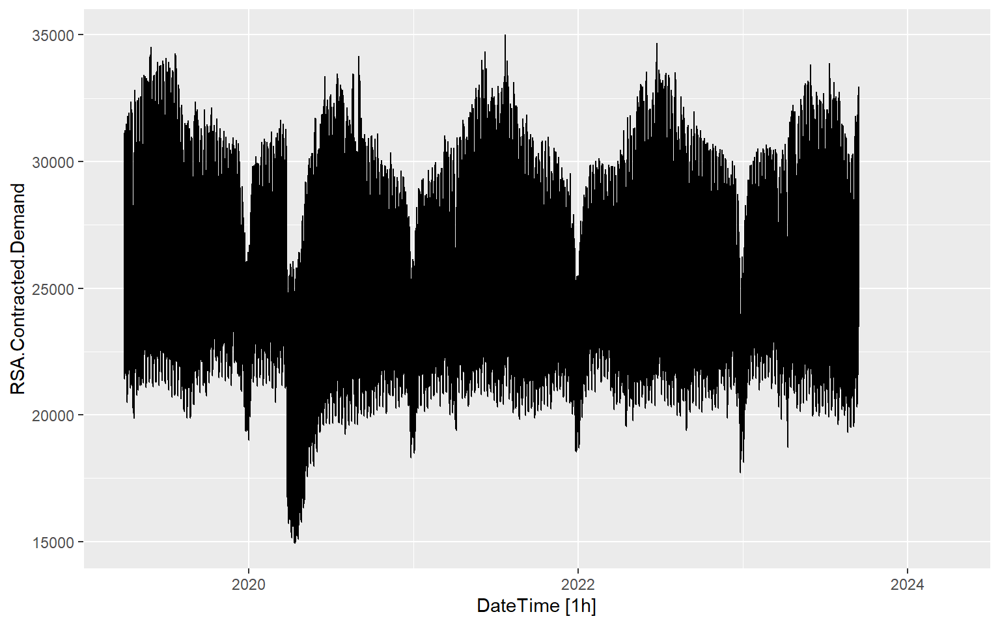
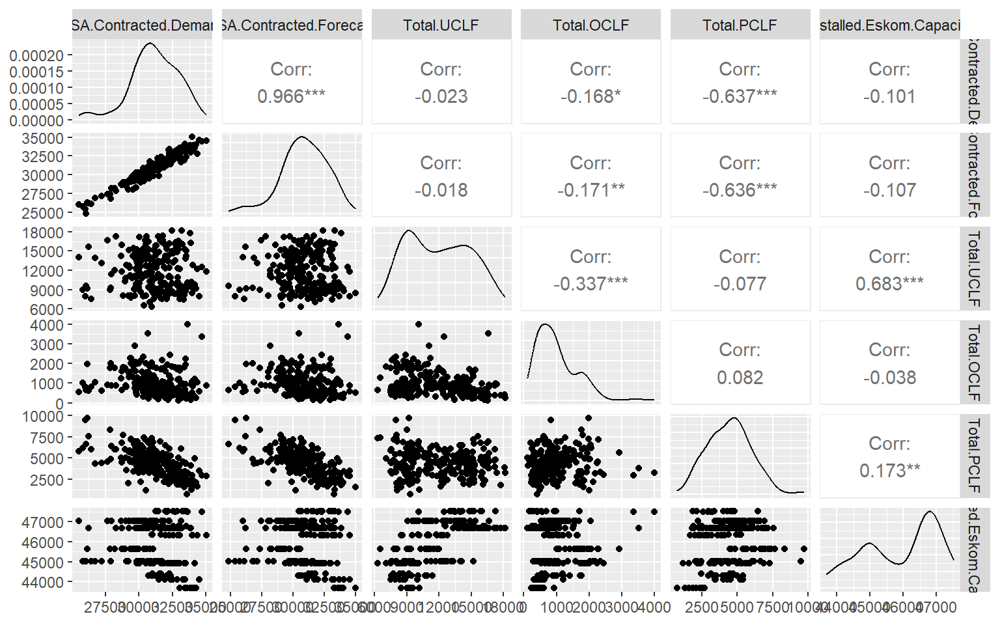
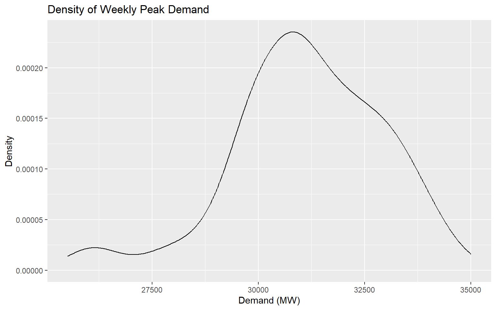
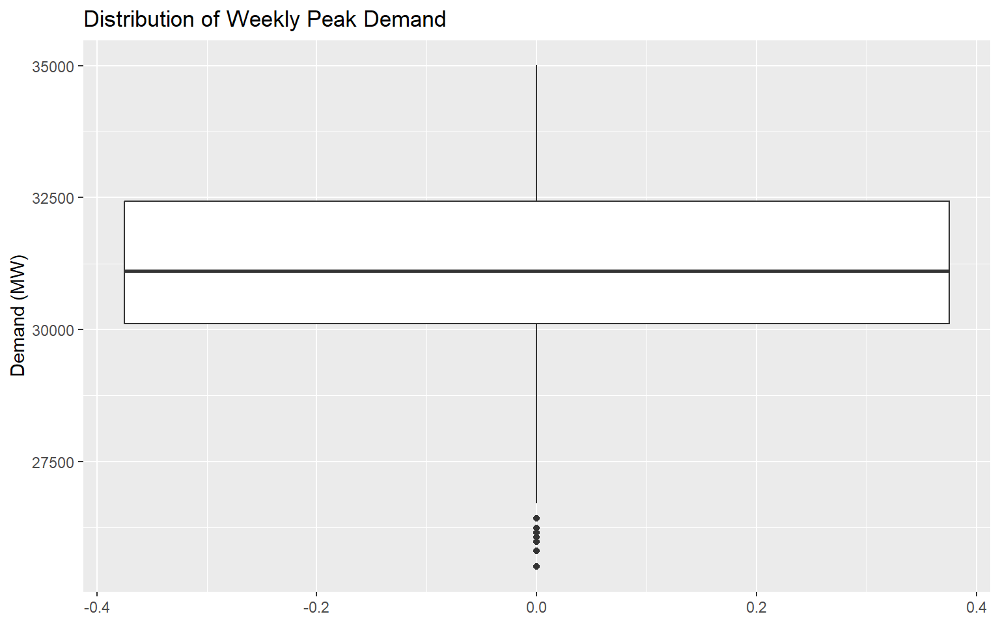
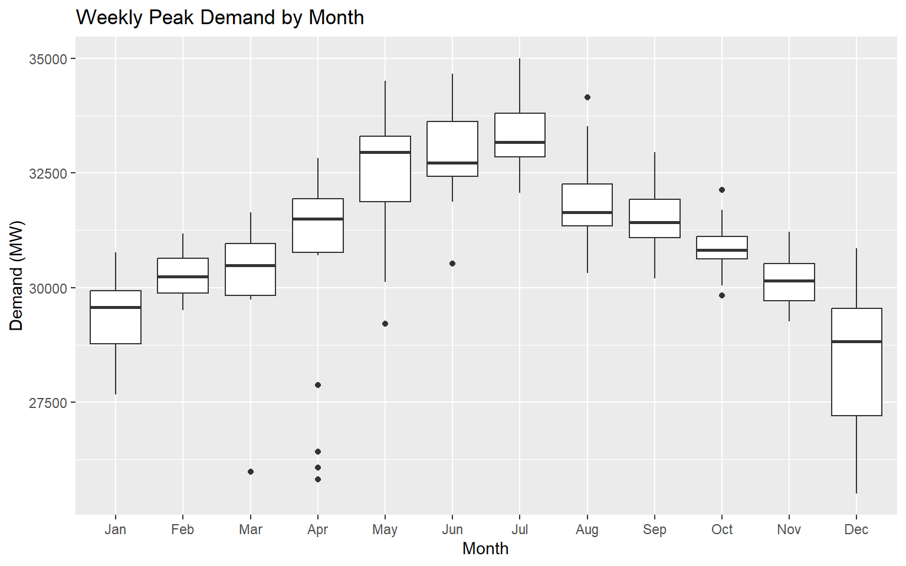
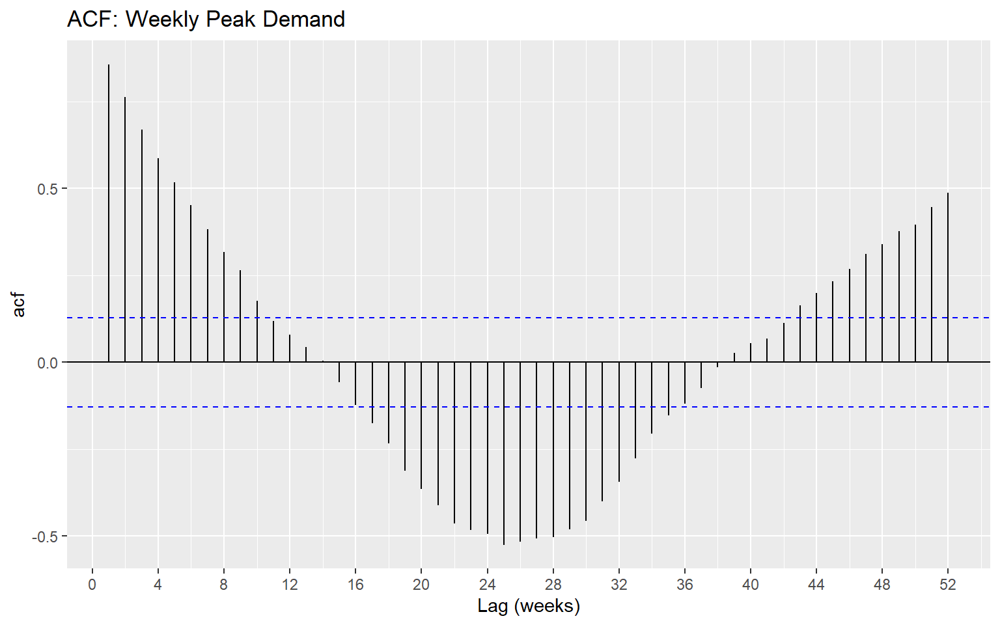
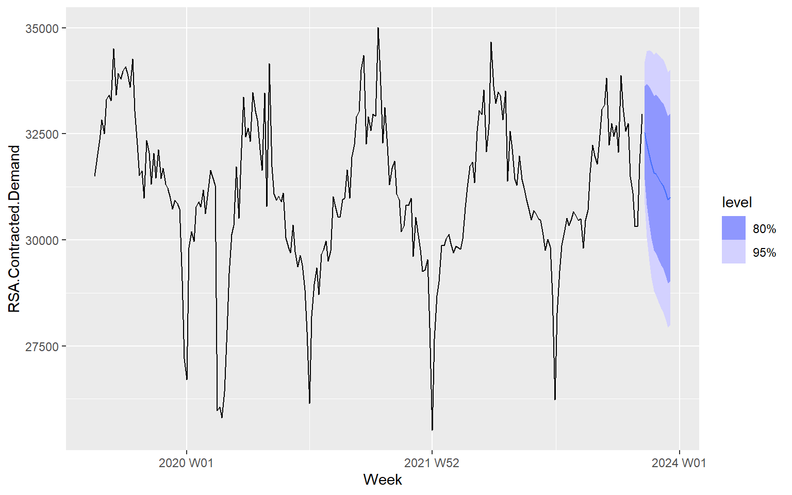
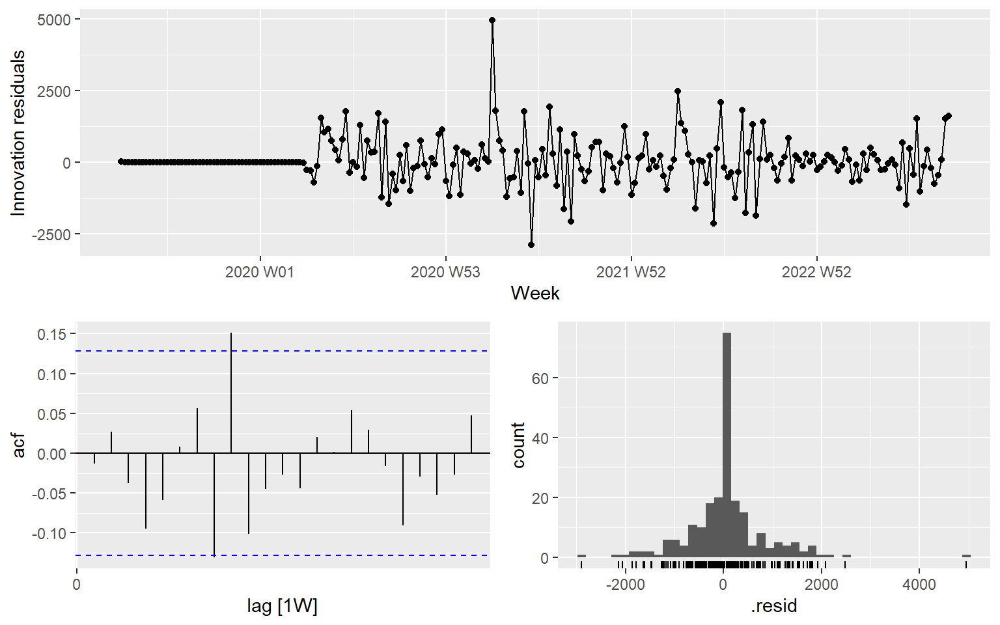

Forecasting Eskom peak electricity demand with SARIMA models (Part 1, ARIMA / SARIMA; implementation project; covers real-world data and model comparison).
This project asks which SARIMA model best describes and forecasts the weekly peak of South African electricity demand. I used RSA Contracted Demand (MW) from Eskom’s hourly system data (ESK6816.csv, Eskom Data Portal via Amathuba), 1 April 2019 to September 2023. After removing the missing demand values, I aggregated the hourly data to the daily and then the weekly maximum, because the hourly and daily series were too noisy to show any patterns. I explored the weekly series with seasonal plots, an STL decomposition, lag plots and the ACF and PACF, then identified a SARIMA model by hand and compared it with the model chosen automatically by ARIMA(), using AIC and residual diagnostics, and produced 12-week forecasts.
Weekly peak demand has a clear annual cycle, with a sharp dip in early 2020 during the COVID-19 lockdown. Demand is strongly correlated with Eskom’s own demand forecast (0.966) and negatively correlated with planned outages (−0.637). The ACF decays slowly and rises again towards lag 52, and the PACF cuts off after one spike, which pointed to a SARIMA(1,0,0)(1,0,0)[52]. On a 12-week test set, the automatically selected ARIMA(0,1,2)(1,1,0)[52] forecast best (RMSE 935 MW), while my hand-chosen model (984 MW) did not beat the seasonal naive benchmark (960 MW).
If I did this again, I would add a dummy variable for the lockdown instead of leaving it in the data, and drop the incomplete final week, whose maximum is biased low. Project 3 (Chapter 11) does both for the same data. A full detailed analysis follows below.
9.2 Analysis
In this project I will look to determine which SARIMA model provides the best predictions of maximum weekly electricity demand.
9.2.1 EDA
First we will explore the Eskom data, and select only the variables of interest. Our primary variable of concern is \(RSA.Contracted.Demand\), which gives the average electricity demand per hour.
Before exploring the data further, we can see that there are many missing (or na) values in the \(RSA.Contracted.Demand\) variable. This is shown in the plot below, where roughly the last year of demand values are missing.
Code
data <-read.csv("../data/ESK6816.csv")data <- data |>select(Date.Time.Hour.Beginning, RSA.Contracted.Demand, RSA.Contracted.Forecast, Total.UCLF, Total.OCLF, Total.PCLF, Installed.Eskom.Capacity)data$DateTime <-ymd_hm(data$Date.Time.Hour.Beginning, tz ="Africa/Johannesburg")data_tsibble_hourly <- data |>select(-Date.Time.Hour.Beginning) |># remove old date / time variablerelocate(DateTime) |># replace it with properly formatted DateTimeas_tsibble(index = DateTime)rm(data) # save pc memorydata_tsibble_hourly |>fill_gaps() |>autoplot(RSA.Contracted.Demand)

Figure 9.1: Plot of hourly demand
We first remove all observations with missing values for demand, and confirm that there are no \(na\) values left in our dataset.
Code
data_tsibble_hourly <- data_tsibble_hourly |>filter(!is.na(RSA.Contracted.Demand))anyNA(data_tsibble_hourly) # should be false if no NA's left in dataset
[1] FALSE
After removing all \(na\) values, we confirm that there are no gaps in our remaining time series data.
From the above plot, we see there is too much variation in the data to clearly see any patterns or trends. Thus instead of using hourly demand data, we will instead look daily maximum demand. For the other variables, we keep their values at the hour of each day’s peak demand.
Now the patterns and trends are much easier to see. There appears to be an annual seasonal component, with the exception of very low demand in early 2020, which is probably an outlier due to the Covid-19 lockdown.
We also can compare each of our remaining variables to see if there is any correlation in the data:
Code
data_tsibble_weekly_max |>as_tibble() |>select(where(is.numeric)) |>ggpairs() # from GGally package for nice correlation plots / EDA. Although it struggles with many variables.

There is definitely correlation present between our variable of interest and some of the other variables. Most notably, Demand has a positive correlation with Eskoms demand forecast variable of 0.966, and has a negative correlation with Total PCLF of -0.637.
RSA.Contracted.Demand RSA.Contracted.Forecast Total.UCLF Total.OCLF
Min. :25510 Min. :24826 Min. : 6304 Min. : 110.0
1st Qu.:30115 1st Qu.:29787 1st Qu.: 9334 1st Qu.: 536.6
Median :31110 Median :30969 Median :11988 Median : 867.4
Mean :31148 Mean :30914 Mean :11971 Mean :1003.9
3rd Qu.:32432 3rd Qu.:32225 3rd Qu.:14392 3rd Qu.:1314.8
Max. :35005 Max. :35034 Max. :18173 Max. :4009.2
Total.PCLF Installed.Eskom.Capacity
Min. : 710.3 Min. :43691
1st Qu.:3308.0 1st Qu.:45017
Median :4484.0 Median :46338
Mean :4434.5 Mean :45944
3rd Qu.:5405.6 3rd Qu.:46797
Max. :9745.0 Max. :47520
Code
data_tsibble_weekly_max |>as_tibble() |>ggplot(aes(x = RSA.Contracted.Demand)) +geom_density() +labs(title ="Density of Weekly Peak Demand", x ="Demand (MW)", y ="Density")

Code
data_tsibble_weekly_max |>as_tibble() |>ggplot(aes(y = RSA.Contracted.Demand)) +geom_boxplot() +labs(title ="Distribution of Weekly Peak Demand", y ="Demand (MW)")

Code
data_tsibble_weekly_max |>as_tibble() |>mutate(Month =month(Week, label =TRUE)) |>ggplot(aes(x = Month, y = RSA.Contracted.Demand)) +geom_boxplot() +labs(title ="Weekly Peak Demand by Month", x ="Month", y ="Demand (MW)")

Code
data_tsibble_weekly_max |>ACF(RSA.Contracted.Demand, lag_max =52) |>autoplot() +scale_x_continuous(breaks =seq(0, 52, by =4)) +labs(title ="ACF: Weekly Peak Demand", x ="Lag (weeks)")

Code
data_tsibble_weekly_max |>PACF(RSA.Contracted.Demand, lag_max =52) |>autoplot() +scale_x_continuous(breaks =seq(0, 52, by =4)) +labs(title ="PACF: Weekly Peak Demand", x ="Lag (weeks)")
As the ACF slowly drops off and then rises again up until lag 52 (1 year apart), and the PACF drops off after one significant spike, this indicates that a seasonal AR(1), or SARIMA (1,0,0) (1,0,0) is adequate.
Code
library(fable)fit <- data_tsibble_weekly_max |>model(sarima =ARIMA(RSA.Contracted.Demand ~pdq(1,0,0) +PDQ(1,0,0, period =52)))report(fit)
fit |>forecast(h =12) |>autoplot(data_tsibble_weekly_max)

We also try fit with using auto.arima:
Code
fit_compare <- data_tsibble_weekly_max |>model(manual =ARIMA(RSA.Contracted.Demand ~pdq(1,0,0) +PDQ(1,0,0, period =52)),auto =ARIMA(RSA.Contracted.Demand) )report(fit_compare) |># shows both models' selected orders and AIC/BICselect(-ar_roots)
.model
sigma2
log_lik
AIC
AICc
BIC
ma_roots
manual
739520.4
-1907.322
3822.645
3822.820
3836.449
auto
868209.7
-1489.510
2987.019
2987.248
2999.791
2.433531+1.376429e-21i, -19.656084-1.376429e-21i
Code
glance(fit_compare) |># tidy comparison of fit statisticsselect(-ar_roots)
.model
sigma2
log_lik
AIC
AICc
BIC
ma_roots
manual
739520.4
-1907.322
3822.645
3822.820
3836.449
auto
868209.7
-1489.510
2987.019
2987.248
2999.791
2.433531+1.376429e-21i, -19.656084-1.376429e-21i
Code
fit_compare |>select(auto) |>gg_tsresiduals()

9.2.2 Test set comparison
To check the forecasts, I refitted both models on all but the last 12 weeks and compared their forecasts with the actual values, along with a seasonal naive benchmark (the value from 52 weeks earlier).
Figure 9.2: Actual weekly peak demand for the last 80 weeks, with the 12-week test-set forecasts from each model.
The automatically selected ARIMA(0,1,2)(1,1,0)[52] has the lowest test-set errors (RMSE 935 MW, MAE 671 MW, MAPE 2.1%). My hand-chosen SARIMA(1,0,0)(1,0,0)[52] does worst on RMSE (984 MW), and does not beat the seasonal naive benchmark (RMSE 960 MW), although it has the same MAPE (2.6%). The automatic model only beats seasonal naive by a small margin, so on this short test period neither SARIMA forecasts much better than simply using last year’s value. The automatic model differences both the series and its seasonal pattern, while my model assumes the series is stationary, which may be why mine forecasts worse. Twelve weeks is a short test, so these differences should not be overinterpreted.
9.3 Reflection
This was my first substantial project, and I chose the Eskom data because electricity demand affects everyone in South Africa. The hourly data was far too noisy to see any patterns, so I moved to the daily and then the weekly maximum, where the annual cycle became clear. The biggest data problem was the missing demand values in the last year, and the dip during the 2020 lockdown, which I left in the data but which a dummy variable would handle better.
Choosing the SARIMA orders by hand from the ACF and PACF helped me understand what those plots show, but my model forecast worse on the test set than the automatic ARIMA and did not beat seasonal naive, which showed me that a model that looks right from the ACF and PACF does not always forecast best. I came back to the same data in Project 3 (Chapter 11), where I kept the last 12 weeks for testing, added a lockdown dummy and dropped the incomplete final week. That comparison showed me what this first project was missing. I also received feedback on my first draft that I did not have time to fully implement.